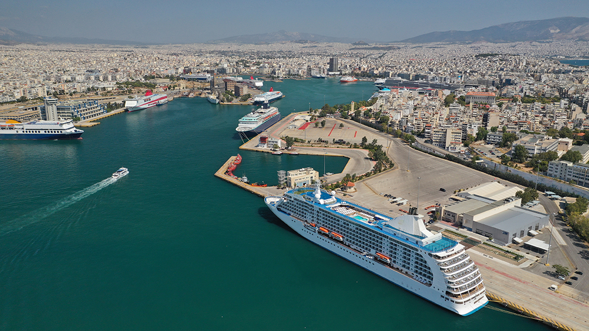

We pick-up and deliver your bags to any place in Athens,
Athens Airport, Piraeus Port, Hotels and Airbnb included
Meet Baggagement
The Baggage Storage & Delivery Service
In Baggagement we pick-up, store and deliver your bags and your sports equipment to any area in Athens,
Athens Airport, Piraeus Port, Hotels and AirBnB.
Enjoy your day exploring the city, while we take care of your bags.
Basic Features - Benefits
Comfort
We pick up and transfer your bags to any location in Athens.
No limitation on size or weight.
Special baggage, like sports equipment, are welcome, as well. 24/7 service upon request.
Easy & Quick
Use our fully optimized online platform from your pc, tablet or smartphone.
Set the date, the time and the place of pickup and delivery. We will take care of the rest.
Safe & Reliable
We seal your bags and store them in our secure storage facilities.
Location tracking available. Insurance coverage included.
Value for Money
Athens Airport & Piraeus port, Hotel & Airbnb pick-up, starting prices from 15€ for one bag, +5€ for every additional.
How it Works
1
Book Service Online
Book the service online selecting the date, the time and the location of your luggage pickup and delivery
2
Baggage Pickup
Our trained staff meets you at the appointed place and time to collect your bags, transfer them with
our own vehicles and store them (for long or short term) safely in our secure premises while you enjoy
Athens hassle-free and baggage free
3
Baggage Delivery
Our trained staff will deliver to you, your bags safely,
at the designated place and time with our own vehicles.
We pickup and deliver your baggage anywhere you want
Athens International Airport
Whether landing or taking off our representative will be waiting for you at arrivals hall or at check
in counters of your flight, to collect or deliver your luggage. Regarding your arrival,
our meeting points are defined based on whether you fly from Airports
within or outside Schengen Zone, so once you place your order and specify your flight
number, you are going to receive an e-mail including exact meeting points either at Arrivals or Departures.
Piraeus Port / Cruise Terminal
We meet you close to the place that your ferry or your cruise ship embarks or disembarks
to collect or deliver your luggage. Piraeus Port has many gates depending on your destination,
so when placing your order in our booking system, there is a field where you should mention your Cruise
ship or ferry name allowing us to track your embarkation and/or disembarkation gate.

Alimos Marina, Zeas Marina or
Floisvos Marina
Athens appears to be a gateway to the seas which means hundreds of islands to explore.
For those who are fond of sailing holiday, and want to take advantage of the time available between yacht
disembarkation and flight or ferry departure,Baggagement can take care of your luggage enabling you
to make a good use of your time. Place your booking, suggesting picking up and delivery place as
well as time, meet our representative at the appointed pier,
enjoy the day hassle-free and collect your luggage at your desirable place and time.
Hotel or Airbnb
Baggagement solved the question of what to do until the check-in or after the check out from your hotel
or Airbnb. Book our service, inform us where your bags need to be picked up in Athens area and have
our personnel at your hotel lounge or at your doorstep. Same way, we can pick-up your luggage from
the Port or the Airport and transfer it to your accommodation in Athens area. Strolling around without
your heavy bags, explore the city and collect memories. Transfer between hotels in addition to long
term storage service for as long as you have planned is also possible.
Or any other place
Contact us and we can arrange with you a conveniet meeting point that supports your itinerary.